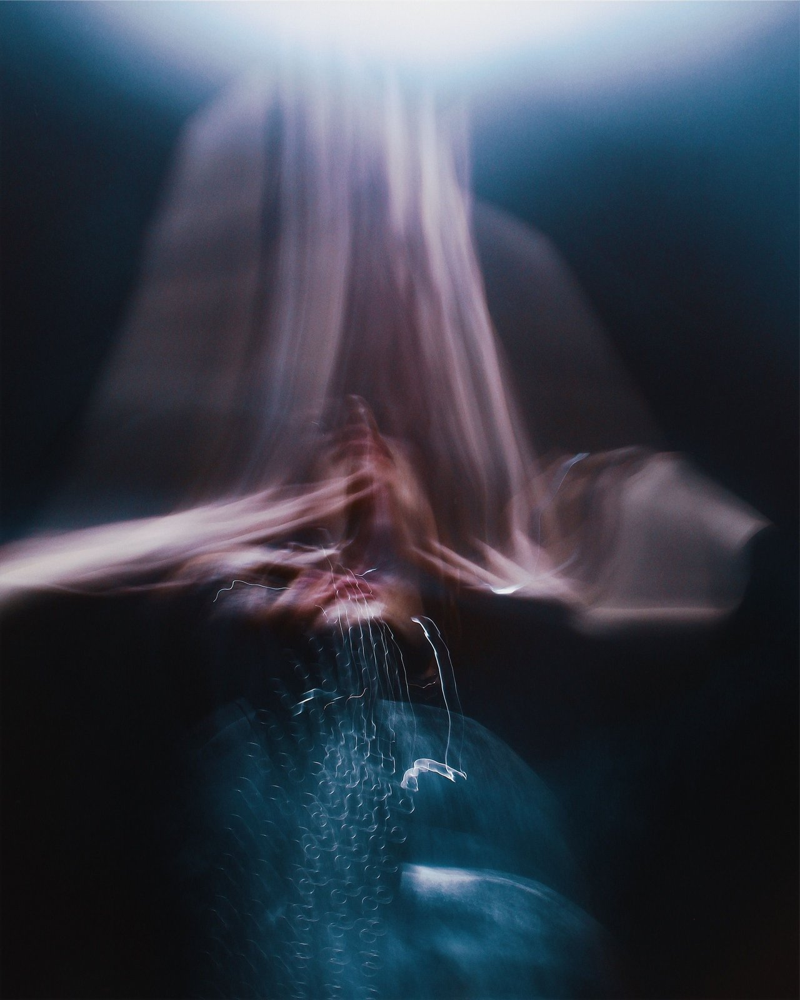
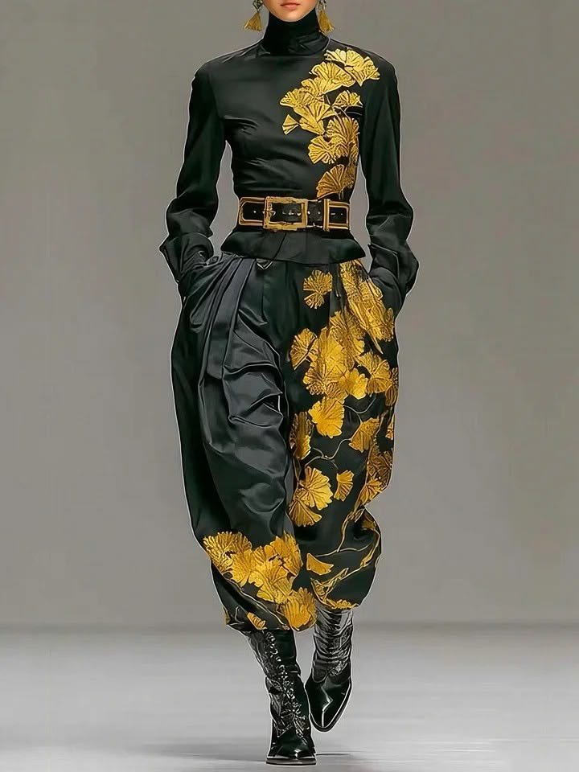
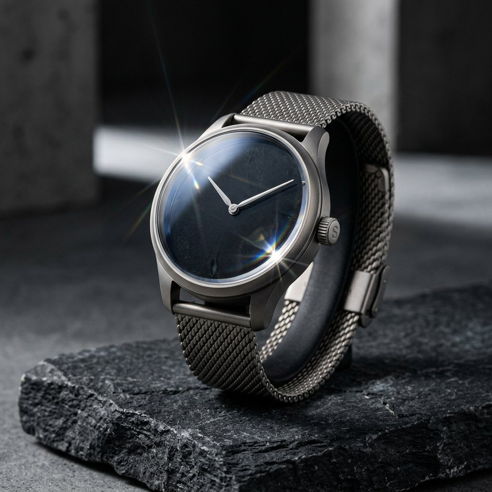

CSS Animations · Choreography
Nothing here moves alone.
Nine choreographies where the interesting part is the relationship — what waits for what,
what arrives from which edge, what keeps moving underneath. Every one of them is written
in data-kui attributes and compiles to real CSS.
Nine sections · zero animation-loop JavaScript



01Scroll as a colour dial
The sentence colours itself, one word at a time.
No word moves. Each one owns a different slice of the scroll range and drains its own grey out as that slice passes, so the sentence resolves left-to-right at exactly the speed you scroll it — and un-resolves if you scroll back up. The second line trails the first without being asked to: a word further down the page enters the viewport later, so its window opens later too.
scroll-desaturate is the one preset here that accepts a scroll timeline, so the colour change is a filter and not an opacity fade. One span per word, each with its own data-kui-timeline="view cover N% cover N+18%" — six identical effects become a sequence purely by sliding that window along.
Motion is a relationship between things, not a property of one.
02Two motion tiers, one hold
Six badges converge while the frame is held.
The card pins for two viewport heights. During the hold, six chips fly in from alternating edges at staggered points on the scrub while the portrait behind them breathes and a hairline swings a full quarter-turn — a continuous tier underneath a one-shot tier, both reading off the same pin.
pin-section distance:200vh on the stage. Every chip is timeline:pin, so cascade:110ms becomes a distance along the scrub instead of a delay on a clock. The ring is glow-pulse repeat:infinite — it never touches the scroll position at all.

03The hold is the choreography
A good loop spends most of its time holding still.
An ambient loop that drifts continuously reads as noise. One that moves, stops, waits, moves again reads as intent — and the waiting is where most of the cycle goes. Each tile below is a single element with a list of waypoints, running forever, with the pauses written into the list.
tween takes a comma list per property — x:'-70,-70,70,70,-70' is five evenly-spaced waypoints, so repeating a value is a hold. repeat:infinite keeps it running; cascade: on the parent turns a shared loop into a phase offset rather than a queue, because a delay on something infinite never expires.
Travel, hold, pop, return
Three properties on one waypoint list. The scale pop lands during the hold, not during the move — so it reads as an event, not as easing.
x:'-70,-70,70,70,-70' scale:'1,1,1,1.55,1'
Three rows, one loop, three phases
Identical attributes on all three. A 450ms cascade against a 3000ms cycle is a permanent 15% phase offset, so they never line up.
cascade:450ms · tween 3000ms repeat:infinite
A tight cascade on a slow cycle
120ms between four bars on a 2.4s loop — close enough that the group reads as one wave rather than four independent things.
cascade:120ms · scale-x:'0.02,1,1,0.02,0.02'
04Stagger as a distance, not a queue
The grid blooms outward from its middle cell.
Ordering a stagger by DOM position gives you a typewriter: first to last, row by row. Ordering it by distance through a declared grid gives you a bloom — the cards nearest the centre arrive first and the corners land last, which is what the eye expects when something expands.
cascade:170ms cols:4 order:0.5/0.5 — cols: is what makes the stagger two dimensional, and order: takes a fractional point in that grid rather than an index, so 0.5/0.5 is the middle cell and 1/0 would be the top-right corner. Each card is one tween-from carrying both its lift and its rotation on a single spring, so the two settle together instead of racing.


05A stagger with a deadline
Six tiles or sixteen, the wave still lands in 700ms.
A fixed gap per item is the wrong knob for a list whose length you do not control: at 50ms an item, two hundred rows take ten seconds to finish arriving. A budget is the right knob — name the total, and the gaps divide themselves.
spread:700ms instead of a per-item step. It composes with the grid ordering from the section above: the budget is divided by the largest distance in the group, so a centre-out order still finishes on time. cols:auto reads the real column count off the laid-out row, so this re-ranks itself at every breakpoint with no second attribute.
0
named effects
0
primitives
0
pure-CSS effects
0%
off main thread
0
waypoints max
0
attribute
06Physics, not a canned curve
A spring is not automatically the soft option.
"Spring" gets used as a synonym for bouncy, but the constants decide that. Same distance, same duration, two springs: one sails past the mark and wobbles home, the other arrives and stops dead. Play them together — the difference is the whole argument for exposing the physics instead of shipping one fixed curve.
Both rows are the same solver, sampled into a CSS linear() curve at compile time. The catch worth knowing: a normalised curve has to fit whatever duration you declared, so stiffness: on its own changes nothing — spring(stiffness:400 damping:20) and spring(stiffness:100 damping:10) are the same curve. What survives normalisation is the damping ratio, and bounce: is that ratio wearing a friendlier name. The button beside them is magnetic-snap — a gesture, so it is one of the few things on this page with a JavaScript listener — and the badge inside it pops on its own spring when the click lands.
Bring the cursor close — the button leans toward it inside a 140px radius. Click, and the badge overshoots.
spring(bounce:0.8) — underdamped
Sails past the mark and settles back through it.
spring(stiffness:700 damping:60) — overdamped
Same solver, same 900ms. Arrives and stops dead.
07One animation triggers another
The token arrives, and something else across the page reacts.
A journey needs somewhere worth arriving at. The token travels a hand-written curve once, on its way into view — and the moment that finishes, a card it shares no parent with, sits nowhere near, and knows nothing about, pops.
path-arc path:'…' is CSS offset-path underneath — a real curve, no runtime JavaScript stepping it. The wire is data-kui-on="kui:finish from:#travel-token": kui:finish is a plain bubbling event the library dispatches, and from: points the listener at whichever element it should be listening to.
Departs
#travel-token
On kui:finish
Arrived ✦
08One control, eight exits
Clearing a list is a sequence too.
Emptying a list in a single frame tells you nothing about what was removed. Cascading the exits at 70ms keeps the direction of the change legible — you can see it drain rather than blink. The circular replay control in the bottom-right corner puts them back.
Every row carries data-kui-on="click from:#clear-all". Without from: a data-kui-on only ever listens to its own element, so dismissing a list from a button outside it needed a script — the selector is the whole wire now. The gap is data-kui-stagger="70ms" on the <ul>, so the list owns its rhythm and the button owns nothing but the moment.
The button has no data-kui of its own. It is only an id that eight rows are listening for.
-
 Ines M.approved the motion spec
2m
Ines M.approved the motion spec
2m
-
 Render farmfinished 1,204 frames
9m
Render farmfinished 1,204 frames
9m
-
 Ade O.left a note on the pin timing
21m
Ade O.left a note on the pin timing
21m
-

Buildbundle down 2.1kb 40m -
 Nour K.asked about reduced motion
1h
Nour K.asked about reduced motion
1h
-
 Kitshipped the cascade order fix
3h
Kitshipped the cascade order fix
3h
- Campaignassets exported 5h
-
 Rafa D.requested the spring numbers
1d
Rafa D.requested the spring numbers
1d
09Small enough to put anywhere
Three flourishes, no wrapper divs.
Not every choreography needs a stage. These are one element each, on hover, and they are the ones you would actually reach for in a nav arrow or a card corner. Hover a tile.
Left: a waypoint list overshooting its own resting point and easing back. Middle: three effects in one attribute, sequenced with at: — relative to the effect before it, so changing one duration re-times the rest. Right: the hover/unhover pair, which plays the same effect backwards on the way out instead of snapping.
Overshoot and settle
Past the mark, then back to it. Three waypoints, one element.
x:'0,130,100' rotate:'0,10,0'
Three effects, one timeline
The tilt starts 260ms before the lift ends; the scale waits 40ms after the tilt.
tween y:-16, tween rotate:5deg at:-260ms, tween scale:1.07 at:+40ms
It animates back out
One effect, two activations. The exit is the entrance in reverse, not a second rule.
data-kui-on="hover/unhover"
—Every string on this page is copyable
None of this needed a build step.
Nine choreographies, one attribute grammar, and a stylesheet the browser compiles once. Open "Show code" on any section above, change a number in the panel, and watch the real element behind it react.